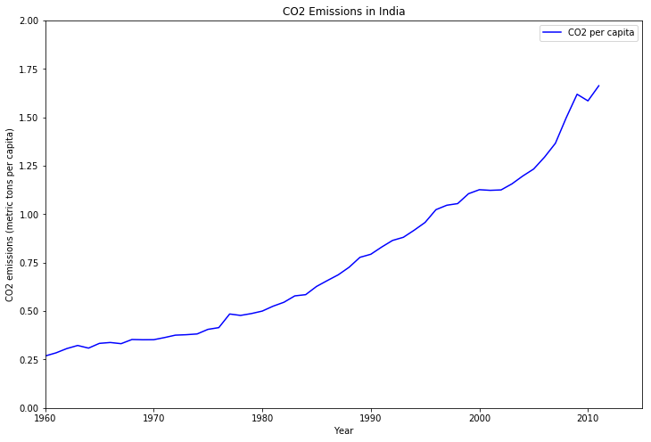
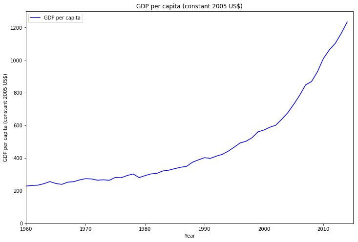
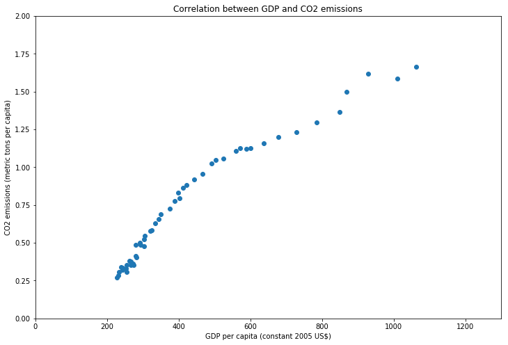
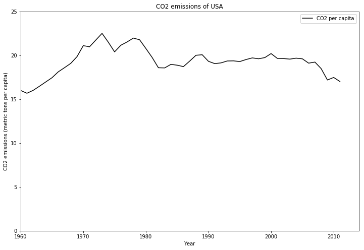
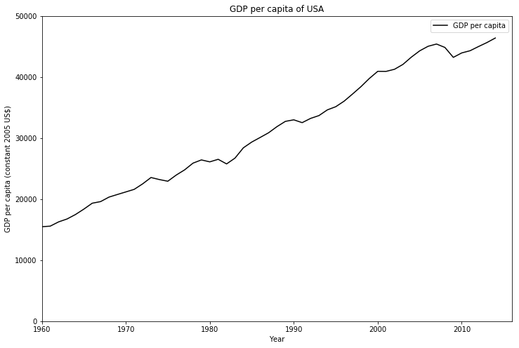
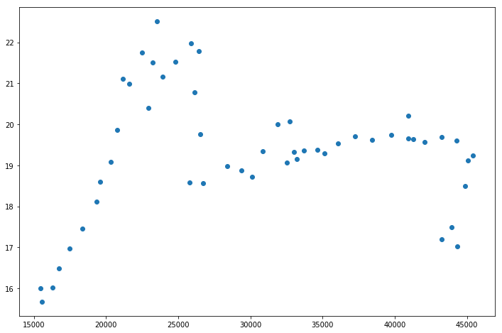
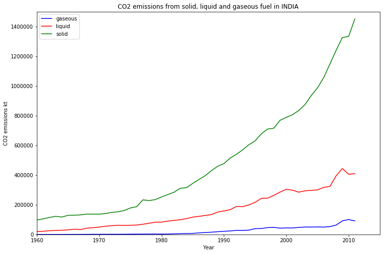
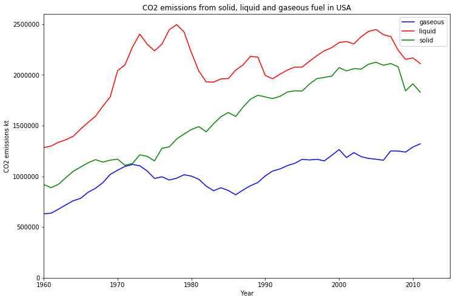
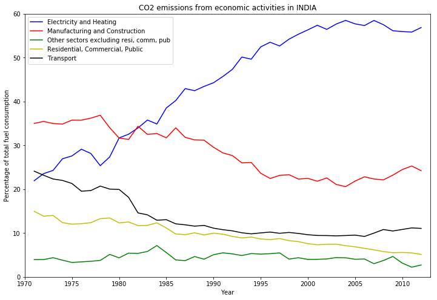
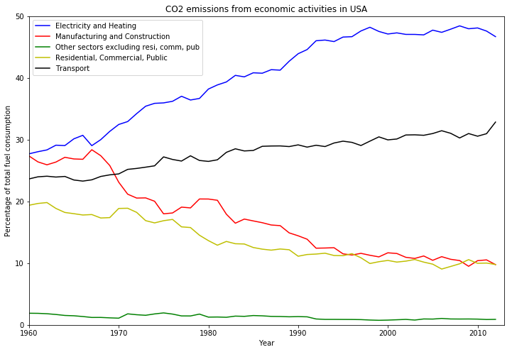

Disclaimer and Introduction¶
I am by no means an expert in Data Science. I am just starting to
explore the vast field of data science because of a lot of other cool
things that I like reading about rely heavily on Data Analystics.
I was kind of stupid to ignore the field of data science because
somehow I believed that the data in data science comes from humans
using applications that do not respect our privacy and the analytics
in data analytics is only used to train recommendation algorithms
which we call Artificial Intelligence.
I was stupid, I admit it. Turns out AI and recommendation algorithms
are just a small subset of Data Science. Here is a list of vast fields
within Computer Science that rely heavily on data science.
- Computational modeling (computerized drug simulations, weather
forecasting, computational fluid dynamics etc) - Astrophysics (radio telescopes, etc)
- High-energy physics (cool stuff at CERN et. al.)
- Medical Imaging (fMRI, MRI etc)
All of these activities generate some amount of data and later this
data is processed by computers to create all sorts of cool results
like false color images (yeah... the images of the Galaxy that we see
are false color images), graphs etc etc.
With all this in mind I started a course on edX. It is called
the
Python for Data Science.
It is brilliant and if you are into Data Science then I suggest that
you should take this course.
So let's talk about this thingy..¶
As a part of this course we have to do a small project using a data-set
that we have used in the course itself. Since I am very much
interested in the environment and the preservation of the environment
I decided to use the World Development Indicators data-set released by
the World Bank and I started to explore the CO2 emissions of India.
The data-set included all sorts of fun data including data on what
percentage of the CO2 emissions came form which type of economic
activities (like electricity and heating, manufacturing,
transportation etc)
Exploring the data of India was not too much fun especially since I do
not have any background in this field. So, I did a comparative study
between the CO2 trends in India and the USA and the results are
really very shocking (maybe I was expecting something else :-P)
Results¶
Correlation between CO2 per capita and GDP per capita for INDIA¶
Here is the graph that shows the CO2 emissions per capita from 1960 to 2011.

Next, let us see the GDP from 1960 to 2014.

Now we will use a scatter plot to look at the correlation.

We have calculated a correlation value of 0.967 using the
the
numpy.corrcoef method. This
method returns
the
Pearson correlation coefficient.
Correlation between CO2 per Capita and GDP per capita for USA¶
Here is the graph that shows the CO2 emissions per capita from 1960 to 2011.

Next, let us see the GDP from 1960 to 2014.

Now we will use a scatter plot to look at the correlation.

We have calculated a correlation value of 0.067 which is almost negligible.
NOTE: Can we take a moment here and just marvel at the staggering difference in the Y-axis vales for the CO2 emissions per capita and the GDP per capita vales for India and USA.
For India the range of the Y-axis of the CO2 emissions is 0-2.0 metric tons per capita while the same range is 0-25 metric tons per capita or the USA.
Similarly the range of the Y-axis of GDP per capita is 0-1200 US for India while the same range is 0-50000 US$ for the USA.
CO2 emissions by fuel types in India and USA¶

In this we can see that most of CO2 emissions in India are due to solid fuels.

In USA the major source of CO2 emission is from the combustion of liquid forms of fuel.
CO2 emissions by economic activities¶
Now in this graph we show the different sets of economic activities that are responsible for CO2 emissions.

As we can see that the major contributor of CO2 emissions in India is
the production of Electricity and Heating, followed by the
Manufacturing and Construction related activities.
Now, let us look at the graph for the USA.

These two graphs are more or less similar in nature with one major
difference. In the USA the Transportation sector is th second largest
contributor to CO2 emissions unlike in India where the Manufacturing
and construction sector is the second largest contributor.
Conclusion¶
I just think that this was very fun.
I used Python for all the work (Python is really amazing!! :-))
All the code is available as
a
Kaggle Kernel.
This is my first kernel. I will keep writing more cool kernels.
The data-set was also obtained from Kaggle and it is the World development Indicators by the World Bank.
Its a HUGE data-set and I have not even managed to explore even 1% of
it. A LOT of domain knowledge is needed to do some actual data
science. :-P
Anyway, this was my Hello-World and I am happy!! :-)
p.s. Check out my Kaggle profile